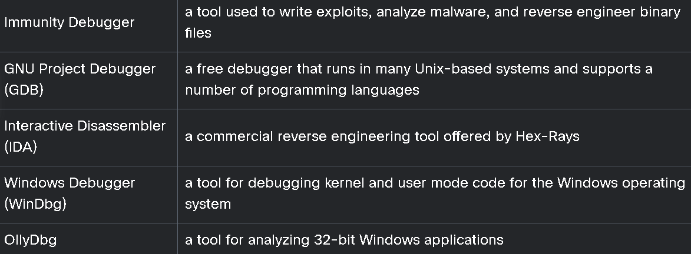

10.1.2 Logic Constructs
Loops
Conditionals
Boolean operators
String operators
Arithmetic operators
10.1.4 Data Structures
JavaScript Object Notation (JSON)
Arrays
Dictionaries
Comma-separated values (CSV)
Trees
10.1.6 Libraries
Prewritten code
Configuration information
Subroutines
Documentation and help information
Message templates
Classes
10.1.7 Procedures
10.1.8 Functions
10.1.9 Classes
10.1.10 Analysis of Scripts and Code Samples for Use in Penetration Testing
exploit-db.com
10.1.12 The Bash Shell
10.1.13 Resources to Learn Python
10.1.14 Resources to Learn Ruby
10.1.15 Resources to Learn PowerShell
10.1.16 Resources to Learn Perl
10.1.17 Resources to Learn JavaScript
---------------------------------------------------------------------------------------------------
10.2 Different Use Cases of Pentest Tools and Analyzing Exploit Code
10.2.2 Penetration Testing - Focused Linux Distributions
Kali Linux
Parrot OS
BlackArch Linux
BlackArch in Docker
10.2.3 Reconnaissance and Enumeration Tools
Passive Recon:
Nslookup, Host, and Dig
Whois
Fingerprinting Organization with Collected Archives (FOCA)
ExifTool
theHarvester
Shodan
Maltego
Recon-ng
Censys
Active Recon:
Nmap and Zenmap
Enum4linux
10.2.5 Common Tools for Vulnerability Scanning
OpenVAS
Nessus
Nexpose
Qualys
SQLmap
Nikto
OWASP Zed Attack Proxy (ZAP)
w3af
DirBuster
Brakeman
Open Security Content Automation Protocol (SCAP) scanners
Wapiti
Scout Suite
WPScan (Wordpress scanner)
10.2.7 Common Tools for Credential Attacks
John the Ripper
Cain and Abel
Hashcat
Hydra
RainbowCrack
Medusa and Ncrack
CeWL
Mimikatz
Patator
10.2.9 Common Tools for Persistence
Microsoft’s Remote Desktop Protocol (RDP)
Apple Remote Desktop
VNC
X server forwarding
10.2.11 Common Tools for Evasion
Veil
Tor
Proxychains
Encryption
Encapsulation and tunneling using DNS and protocols such as NTP
Veil:
Step 1. Launch Veil
Step 2. Select Evasion
Step 3. List the Payloads
Step 4. Install a Payload
Step 5. Verify Payload File Location
Encoding methods:
Base64
Binary (8-bit)
NetBIOS
Hex
DNS Tunneling:
DeNiSe
dns2tcp
DNScapy
DNScat or DNScat-P
DNScat2 (DNScat-B)
Heyoka
iodine
sods
psudp
Feederbot and Moto
10.2.13 Exploitation Frameworks
Metasploit
modules:
auxiliary
encoders
exploits
nops
payloads
post (for post-exploitation)
Browser Exploitation Framework (BeEF)
10.2.15 Common Decompilation, Disassembly, and Debugging Tools
The GNU Project Debugger (GDB)
Windows Debugger
OllyDbg
edb Debugger
Immunity Debugger
Interactive Disassembler (IDA)
Objdump

10.2.17 Common Tools for Forensics
ADIA (Appliance for Digital Investigation and Analysis)
CAINE
Skadi
PALADIN
Security Onion
SIFT Workstation

10.2.19 Common Tools for Software Assurance
SpotBugs, Findsecbugs, and SonarQube
Fuzzers
Peach
Mutiny Fuzzing Framework
American Fuzzy Lop

10.2.21 Wireless Tools
Wifite2
Rogue access points
EAPHammer
mdk4
Spooftooph
Reaver
Wireless Geographic Logging Engine (WiGLE)
Fern Wi-Fi Cracker
10.2.23 Steganography Tools
OpenStego
snow
Coagula
Sonic Visualiser
TinEye
metagoofil
10.2.25 Cloud Tools
ScoutSuite
CloudBrute
Pacu
Cloud Custodian
<END>